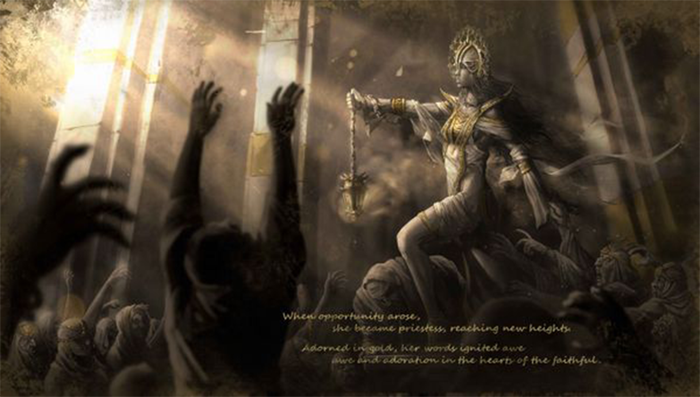

When she came of age, she attended the high-ranking priests during the yearly worshipping of the sea-goat, the God of Water and Creation. Swinging a censer down the great hypo-style hall, she cast thick black fumes that reached the cold towering stone pillars before dissipating. Her worries lifted, and the resulting bliss made her feel closer to the Gods than ever. She worked herself to the bone each day that followed, fulfilling her duties while taking on new ones, as she aided the priests during purification rituals.
Story
When she was five years old, Adiris, the youngest of a family of seven, was left on the brick-red burning steps of the Temple of Purgation at the centre of Babylon.
To process her shock and sorrow, she held onto the belief that the Gods had a plan for her. Her new life was one of quiet servitude.
She would tend to the gardens, prepare ceremonial meals, and polish ceremonial incense burners. At night, she would pray for a sign that would reveal her purpose.
As she began reciting the Epic of Creation, a woman at the back swooned and collapsed. Adiris rushed to her and noticed the black blisters covering her feet. Without hesitation, Adiris grabbed her sacred blade and swung it at her own foot, severing a toe. Then she offered the bloody part to the Gods, asking them to protect the woman. A silence fell over the followers, who revered Adiris as their new priestess.
But her faith was tried when she showed the first signs of infection; her cough became a mix of phlegm and blood, her neck erupted in abscesses, and her four-toed foot darkened. Ashamed of her condition, she began wearing a veiled headpiece and carried a censer that masked the rancid smell of sick that clang to her skin. Hoping to be saved, she kept performing the rituals, offering blessed water and food to her followers.
They camped in a damp cave, where Adiris lay in a pool of vomit. Her foot, which had turned black, was so swollen she could not go any further. Her followers and she realised the truth in that cave: they were all infected with the plague. Kneeling among her retching followers, Adiris made one last prayer. The black fumes of incense rose into the damp air before being wiped off by a cold breeze.